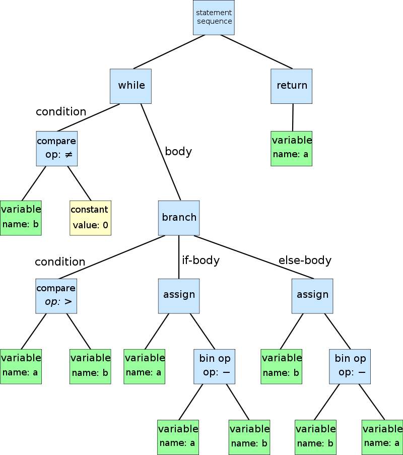
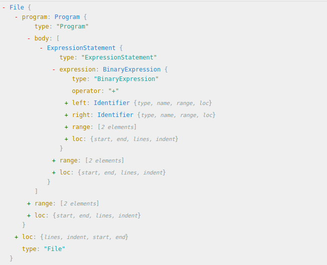
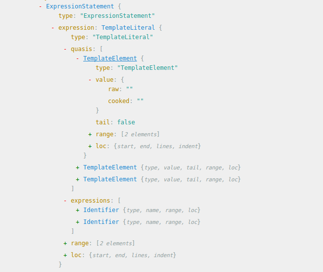

之前对 Accounts 帐号做了下前端代码库更新，基本是 ES5 -> ES2015。使用的工具是 Codemod，在这里作下总结。这也是组内的一次技术分享。
Content
- 背景
- Codemod
- jscodeshift
- Demo Time
- Refs
背景
作为一个自信而自豪的前端弄潮儿（F2E），我们总是希望能够在这个每天都在飞速迭代的行业，与时渐进。
前端们是一群不安分的人，大家喜爱新框架、新语法，而 JavaScript 也是一门非常灵活的语言，它提供给我们的 API 也在与时渐进。比如，当 ES2015 ES2016 ES2017… 出来的时候，那些新语法糖，简洁漂亮，且更易于理解逻辑，于是我们都想去尝试下。
但是尝试归尝试，对于新项目尝试起来成本很低，只需要把新功能都用新语法编写就好。
而创建新项目的同时，其实我们也在维护着一些已有的旧项目。如果你还并没怎么理它们，可能它们还活得不错。但是一旦 PM 心情好想加个新功能，或者你哪天心情好想去更新下代码库，然后看到自己之前写的那些代码，那些现在其实可以更优雅漂亮的代码，是不是手里特痒痒特想把它们更新了？
执行力强的前端儿可能说干就干了，嗯，就假设我们有个项目 Project，里面使用的是用ES5 版 React 作为 UI View。然后它大概四个页面(Page)，每个页面包含大概四个组件(Component)，然后你从某个看起来比较小、不容易出错的Component 入手，开始一行一行改写代码，嗯，var React = require('react’) 改为 import React from 'react’， var API = ‘/j/app/xxx’ 改为 const API = ‘/j/app/xxx’，var foo 改为 let foo，function () {…} 改为 () => {…}，module.exports = React.createClass({…}) 改为 export default class MyComponent extends React.Component {…} …
天哪，有完没完，一个组件改完下来，你已经感到身体被掏空，望了望 Components 列表，更不用说，重新 build 过的测试还没过。你陷入了绝望...
那么有没有更快一点的办法呢？
稍微有点经验的前端儿可能想到「正则表达式匹配替换」。Bash Awk | Sed 命令，或者 Vim :%s/var/let/g。可是如果需要有些变量是 const 类型，有些是 let，而有些保持 var 不变怎么办？再比如说
merge(a, {b: 1}, c); // Old
需要变为
({...a, b: 1, ...c}); // New
这里光是这个函数的 arguments 就可能有多种形式，比如 variable，一个匿名函数返回的 Object 或者 Plain Object 那种。
这里相当于是一个 Context-non-free 的问题，也就是上下文语义很重要。
这样的话，无论再怎么强大的RegExp 也无能为力。因为正则的本质，其实是根据一定的 Pattern 来匹配字符串，但是在真正的代码里面，所有的字符串都有语义，都有上下文，这里的正则表达式会既复杂又无用。
所以，我们得换一个维度思考问题。
Codemod
对「代码库的批量迁移更新」，其实也是程序员的一个需求，所以也感激地，已经有一群懒惰又聪明的程序员造出了工具：Codemod，将「大型仓库代码的批量迁移」自动化，省时省力。
好吧，所以 Codemod 到底是什么呢？ 官方文档这样写着：
Codemod is a tool/library to assist you with large-scale codebase refactors that can be partially automated but still require human oversight and occasional intervention.
这样看来，可以很好的解决我们的需求了。 基于 Codemod，又出现了针对 JavaScript 代码迁移的工具 Facebook jscoodeshift， 基于 jscodeshift，又构建了迁移一般 JavaScript 代码（比如 ES5 -> ES2015) 的工具 js-codemod 和迁移 React 相关项目的 react-codemod。
嗯，这么看来，我们的事情就变得容易多了。 根据上面那些工具的官方文档，我们只需要按顺序执行以下命令：
> npm i -g jscodeshift
> git clone https://github.com/reactjs/react-codemod.git
> git clone https://github.com/cpojer/js-codemod.git
> jscodeshift -t react-codemod/transforms/class.js --mixin-module-name=react-addons-pure-render-mixin --flow=true --pure-component=true --remove-runtime-proptypes=false src/register/component/myComponent.jsx
> jscodeshift -t js-codemod/transforms/no-vars.js ./src/register/component/myComponent.jsx
然后，再次 git status 一下或者直接打开刚才 transform 的 myComponent.jsx 文件查看，你会发现，神奇般，你的代码都成为了它们应该成为的样子。
暂时以我之前做的 Accounts 项目为例： https://github.intra.douban.com/accounts/accounts/pull/553/files#diff-b2286efdea6a62288250264e82bd948b
基本步骤如下：
- 因为是第一次使用 codemod，所以比较谨慎，一个一个 component 来；
- 先用 react-codemod 转，把大部头代码迁移；
- 然后 js-codemod 小步更新整理；
- 然后再根据一些自己的 Code Style 做些细节上的修改。比如使用 standard-format 工具格式化代码，符合我个人写的代码风格。
- 毕竟 JS 太过于灵活，每个人写代码时候风格和结构都是各异的，有时候的转换还是会出现一些与想象中不一致的结果，官方文档也是说仍然需要人工干预，所以会手动修改下代码细节；
- 一切组件迁移就绪，npm run test 测试通过以后，重新 build 运行
这里我把已有的十几个组件和页面文件，全部使用上面的工具进行了更新。
然后当你重新 build 后，你会发现测试仍然通过，组件功能仍然 work，但是代码库却是使用新语法糖进行了大规模彻彻底底地更新！简直太神奇了！
那么，它是怎么做到的呢？
jscodeshift
让我们来重新读一下 jscodeshift 的文档。
jscodeshift is a toolkit for running codemods over multiple JS files. It provides:
- A runner, which executes the provided transform for each file passed to it. It also outputs a summary of how many files have (not) been transformed.
- A wrapper around recast, providing a different API. Recast is an AST-to-AST transform tool and also tries to preserve the style of original code as much as possible.
那么这里就出现了两个关键的概念：Runner 及 AST。
Runner，之前觉得就是
jscodeshift -t <transform.js> /to/file/path的transform.js，也就是说，你打算使用 jscodeshift 对源文件进行何种变换，这里面就是变换函数；但是仔细阅读了下相关文章，发现不对。A runner/worker feature that can apply transforms to thousands of files in parallel. -- CPojer Effective JavaScript Codemods
AST，Abstract Syntax Tree，抽象语法分析树。
为了更好理解以上概念，先来看一下之前运行 jscodeshift 命令过程。
我们先是把一个里面包含了 JS 代码的源文件传给了它，然后它读取了源代码，又根据写好的 transform.js 对源代码进行了相应的变换，最后输出了变换后的 JS 代码，覆盖了原文件。
简单的说，就是
SourceCode => codemod => ObjectCode
那么再详细一点，根据 jscodeshift 作者之一的 CPojer 在一次 JSConf 上对这个工具的介绍，jscodeshift 操作基本是按以下过程：
Parse => Find => Create => Update => Print
- Parse: SourceCode => AST （Tree Nodes)
- Find: Find the Nodes we want to replace // Transform
- Create: Create the New Nodes we want to insert // Transform
- Update: Update the AST at the right location // Transform
- Print: Print it back into JavaScript Source with proper formatting and should like human wrote this.
第一步，将源代码解析 (parse) 成 AST
我们知道自然语言（Natural Language)，无论什么语种，都会有「主语」「动词」「宾语」「标点符号」来描述一个现实世界所发生的事件。 而在计算机编程语言 (Programming Language)，无论什么语种，都会有「类型」「运算符」「流程语句」「函数」「对象」等概念来表达计算机中存在内存中的0和1，以及背后运算与逻辑。 不同的语言，都会配之不同的语法分析器(parser)。 对于自然语言，我们的大脑就是一个 Parser。对于编程语言，语法分析器是把源代码作为字符串读入、解析，并建立语法树的程序。
什么是语法树？摘自 Wiki 一段：
计算机科学中，抽象语法树（abstract syntax tree 或者缩写为 AST），或者语法树（syntax tree），是源代码的抽象语法结构的树状表现形式，这里特指编程语言的源代码。树上的每个节点都表示源代码中的一种结构。之所以说语法是「抽象」的，是因为这里的语法并不会表示出真实语法中出现的每个细节。
所以每种语言的 AST 都是不同的。有专门的 Parser 来生成 AST。
这么说其实还是有点抽象，我们先打开 wiki 看到 wikipedia 这个图，

前端er 一定会觉得很相似，这里不就是 DOM 语法树的终极抽象版本吗，只是把一个个 DOM Nodes 换成了一个个更加无语义的字符 Token。 FB 有一个很棒的工具 ASTExplorer，可以用来更形象地展示。
比如说，我们现在就只有一个很简单的表达式a+b，这里是 recast Parser 解析后的 AST 结构：

看上去特别复杂。注意那些蓝色字体 File, Programme,ExpressionStatement,Identifier… 这些都是 AST Nodes，其他的都是和这个 Node 相关的数据。
关于 Parser 又是一门很深的学问了。 在 ASTExplorer.net 上可以看到有很多 parser，比较著名的有 Esprima(jQuery)，Uglify-JS, Babylon(Babel), Acorn(Tern / Webpack), 及 jscodeshift 使用的 recast. 虽然有很多 Parser，但是基本上，一个 parser 的结构都差不多，对源代码进行词法分析，生成 Tokens，对 Tokens 进行语法分析，然后生成 AST。

具体可以参考看下 Esprima Parse Demo。 生成的 AST 都遵循一个统一标准 ESTree or Mozilla SpiderMonkey，也就是说都会返回 ESTree Compatible AST.
第二三四步，对生成的 AST 进行操作修改 (Find Nodes & Create New Nodes & Update Nodes)
Wiki 有介绍说，parse AST 的代码基本是使用Visitor Pattern，如：
// recast
var ast = recast.parse(src);
recast.visit(ast, {
visitIdentifier: function(path) {
// do something with path
return false;
}
});
但是 js-codeshift 基于 Collections 概念，很贴心的给这些 Parser API 继续包了一层，提供了一个不一样的前端友好型 API.
// jscodeshift
jscodeshift(src)
.find(jscodeshift.Identifier)
.forEach(function(path) {
// do something with path
});
// Provide jQuery-likely and F2E-friendly Syntax API
// Manipulate AST nodes conveniently.
读这段代码的时候，一下子觉得又似曾相识。这不就和使用 jQuery 操作 DOM 一样嘛。
可以对比下 “普通 Parser” 与 jscodeshift 操纵 AST 的区别：
可以看到如果使用 esprima ，AST Traverse / Walk 基本是 visitor pattern.
https://github.intra.douban.com/zhangbinliu/ast_demo/tree/esprima
第五步，输出转换后的代码
这个据 CPojer 说，根据转换后的 AST，以及一些输出 Options（比如是否单引号、tab 宽度是多少、需不需要去掉尾部分号…）是一个挺困难的过程。 但最终，jscodeshift 的 print API 语法却是只要一行代码即可。
.toSource({quote: 'single'}); // sets strings to use single quotes in transformed code.
其实 Recast 在这做了大量的工作。
经过这五个步骤，一次 jscodeshift 的转换过程就算完成了。
DEMO TIME!
Write a codemod transform
jscodeshift -t <transform.js> /to/file/path 的 transform.js，也就是说，你打算使用 jscodeshift 对源文件进行何种变换，这里面就是变换函数；
Problem:
// Before
'Hello, ' + name + ', this is a string.'
// After
`Hello, ${name}, this is a string.`
Solution:
- Simplify:
// Before
a + b
// After
`${a}${b}`
a + b AST:

${a}${b} AST:

对比两个 AST 可以发现 我们只需要
- 读入需转换的代码，找到
BinaryExpression - 保存
BinaryExpression左右两边的值（node.left & node.right) - 生成一个为
TemlateLiteralNode，quasis是一个包含了三个TemplateElement的数组，cookde & raw keys都是''，expressions是一个包含 node.left, node.right 值的数组。 - 然后将它返回输出；
Solution Example:
- http://astexplorer.net/#/gist/33b63b7dc8da6d9ea4936c631adc994d/7905ef5b30dfc0cb3c811af8a8960f11014ef402
- http://astexplorer.net/#/gist/a71957902ec1fd79f199eb37e5e6801a/55c4910295973b3a4d09770d94cec73d5096daa4
- http://astexplorer.net/#/gist/a71957902ec1fd79f199eb37e5e6801a/cf3c898c5fe494d08a978dd1a3a3e56fc42828a8
官方没有太详细的 transform 编写指导，可以多谷歌或者学习 react-codemod/tranform or js-codemod/transform， 个人觉得写 JS-codeshift Transform | Babel-Plugin 本质其实就是对比两棵语法树，像解谜一样，看看如何「又好又快」变换成这样。 剩下的一开始如何读取源 JS 代码并解析成语法树，具体在 AST 上 traverse & find & create & update （这里我猜测其实是一个递归遍历节点树的过程？），及之后如何按一定的 code style 生成我们需要的代码，都是透明且不关心的。
总结 & 开脑洞
基本处理流程：
AST 是很有用的一个抽象概念。一旦你理解了这些规则，唯一的限制就是解析器和你的想象力。
- 纯 AST parse 太过于理论，既然是工程师，还是需要自己动手写点什么来解决自己实际遇到的问题。
- 可以继续拓展到「语法高亮」、「关键字匹配」、「代码格式化」、「作用域判断」、以及「代码压缩」、「Babel 插件」等等。
- 渐渐深入底层进行分析，让自己对这门语言有了更多、更深入的了解，可以更好地成为产品「创造者」，而不单纯是「使用者」。
- Write JavaScript that write JavaScript! The best editor is JavaScript. Cool!
思考
- 可以在一个 codemod transform 里面同时进行两个变换吗？个人觉得可能会很复杂且效果不太好，因为有些 transform 并不是正交的。🤔
Refs:
- CPojer’s Talk
- Effective JavaScript Codemods
- Codemod Interview
- How to write a codemod 结合 CPojer’s Talk, 这个虽很长但很有用！
- AST 在美团的应用
- imweb